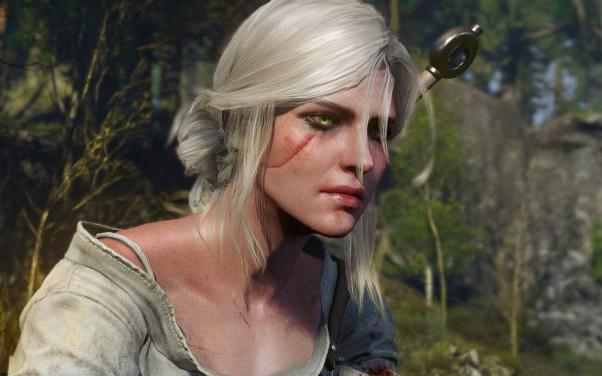
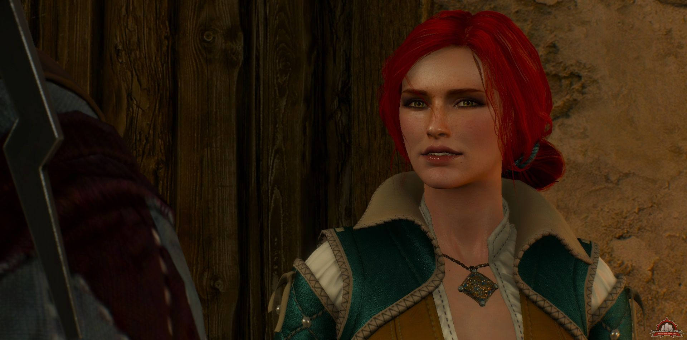
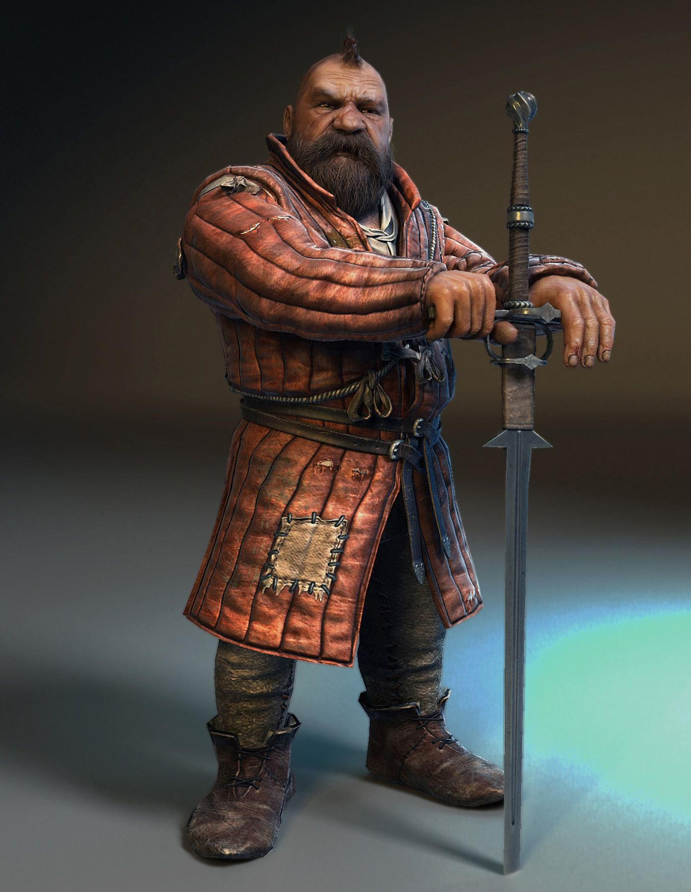

| Strona główna | | Przyjaciele Geralta | | Miecze wiedźmina | | Bestiariusz |

Geralt mimo swego paskudnego czasem charakteru oraz swej upartości miał wielu przyjaciół. Od koleżków ze Szkoły Wilka, po królów oraz wielkie czarodziejki. Jego życie towarzyskie zdecydowanie nie było nudne...
Cirilla Fiona Elen Riannon, zwana także Jaskółką, Dzieckiem Starszej Krwii czy po prostu Ciri, córka królewny Pavetty i Dunyego (Jeża z Erlenwaldu), wnuczka królowej Calanthe, potomkini legendarnej elfiej czarodziejki Lary Dorren i nosicielka Starszej Krwi. Od ojca wywodzi się z cesarskiego rodu var Emreis. I choć jej pochodzenie mogłoby sugerować że jest wypielęgnowaną księżniczką, prawda jest zgoła inna. Los chciał by została dzieckiem-niespodzianką, oddana zatem musiała być w swoim czasie pod opiekę wiedźmina, a konkretnie Geralta. Po śmierci jej rodziców i opiece babki Geralt odnalazł ją w Cintrze, jednak nie zabrał ze sobą. Stało się to dopiero kilka lat później, po wielu nieudanych próbach aranżacji małżeństwa, a także wielokrotnym zagrożeniu jej życia. Następnie uczyła się wiedźmińskiego fachu, nigdy jednak nie przystąpiła do Próby Traw. Jej potencjał magiczny został szybko zauważony i była odtąd uczona przez między innymi Triss Merigold i Yennefer z Vengerbergu. Historia Ciri pełna jest przewijających się nitek przeznaczenia, losów Geralta oraz, ogółem rzecz biorąc, trudnych sytuacji. Najważniejsze jest jednak to, że Ciri jest osobą niezwykle silną i wytrwałą, pełną dobrych emocji, mimo przeciwności losu. Geralt zaś? On jest dla niej nie tylko nauczycielem, jest dla niej jak ojciec.
Yennefer z Vengerbergu. Czarodziejka, nauczycielka Ciri, wpływowa kobieta pociągająca wiele sznurków w politycznym świecie, oraz... Żona, kochanka Geralta? Ich drogi splotły się dość standardowo - Geralt ratował Jaskra, ona mu pomogła, poczym uwięziła, wykorzystała do ośmieszenia paru osób w mieście, poczym zaczeła łapać Dżina, a Geralt oczywiście musiał się w to wpakować. Wypowiedział życzenie i tak już zostało. Widzieli się, rozstawali, znowu przypadkowo spotykali, niby razem, ale jednak wiedli osobne życie. Yennefer była jedną z tych kobiet, które nie przyjmowały odmowy ani porażki i zawsze stawiały na swoim. Czasem zimna i bezwzględna, czasem życzliwa i czarująca, trudno powiedzieć czy Geralt był nią zafascynowany tylko z powodu jego życzenia, czy może było w tym coś więcej. Gdy na drodze Geralta pojawiła się Ciri, Yennefer zaopiekowała się nią równie dobrze jak wiedźmin i mimo, że miała co do niej swoje plany, pozwoliła jej kroczyć ścieżką przeznaczenia.
Rudowłosa zdzira, jak nazwała ją Yennefer, po odkryciu jej romansu z Geraltem, była czarodziejką. Triss Merigold, choć także stanowcza, stanowiła bardziej uczuciową wersję Yennefer. Być może właśnie to sprawiło że Geralt był dla niej raz przyjacielem, innym zaś razem kochankiem. Była doradczynią króla Foltesta, a później członkinią Loży. Ona także nauczała Ciri magii, pomagała Geraltowi jak mogła oraz odegrała ważną rolę w jego życiu.
Dumny bard, zadufany w sobie trabadur i dureń, którego nie raz Geralt musiał ratować z opresji - tak można w skrócie przedstawić osobę Juliana Alfreda Pankratza, zwanego Jaskrem. Na studiach w akademii Oxenfurckiej leń i idiota, zdał z wynikiem celującym, nauczał tam, poczym ruszył w świat, gdzie zdobył wielu fanów. Grywa na dworach, ale i w knajpach, lub na ulicy, by poderwać jakieś dziewcze. Talentu mu co prawda nie brakuje, jednak jego nieskromny ubiór i pycha nierzadko dostarczają mu wrogów, wśród osób które poznaje w różnych sytuacjach. Jest także sprawcą wielu kłopotów Geralta, jednak stara się jak może i wiedźmin szczerze sobie jego towarzystwo ceni.
Zoltan Chivay, a co! Gdy tylko pomyśleć o tym krasnoludzie, gęba się od razu cieszy. Zaradny, pomocny, no i zawsze chętny do wypicia kilku głębszych z Geraltem. Zoltan jako krasnolud powinien siedzieć w górach i kopać tunele, wydobywać złoża i wykuwać miecze, jego życie jednak toczy się zupełnie inaczej i rzuca go w różne miejsca na świecie. Brał udział w wojnie, robił interesy w Novigradzie, przeżył pogrom w Rivii oraz podarował Geraltowi miecz - sihill. Dobry przyjaciel i znakomity kompan do podróży!
Postać ta jest wyjątkowa, nawet nie ze względu na swoje czyny (które i tak bywały imponujące), ale ze względu na samą swoję osobę. Regis był bowiem wampirem wyższym, istotą potężną, nieśmiertelną. Emiel Regis Rohellec Terzieff-Godefroy miał według ludzkiej miary czasu 428 lat. Z wyglądu jest szpakowatym mężczyzną w średnim wieku. Z bladą twarzą oraz ciemnym ubiorem z jednej strony wydaje się uprzejmym człowiekiem, z drugiej zaś, kimś z kim lepiej nie zadzierać. Za młodu głupi i żądny krwii, po śmierci z rąk Vilgefortza i 50-letniej regeneracji staje się jednak dojrzałym i niezwykle inteligentnym mężczyzną. Jest lojalnym kompanem Geralta oraz osobą bardzo roztropną.